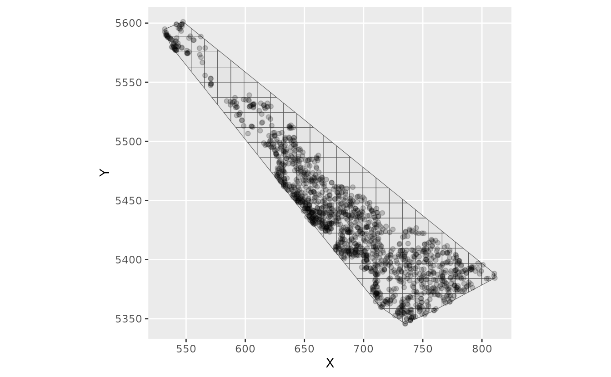
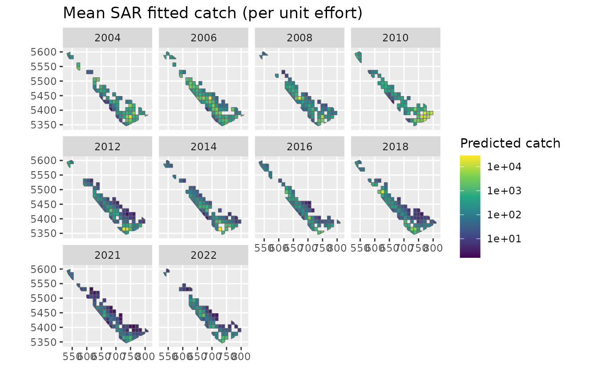
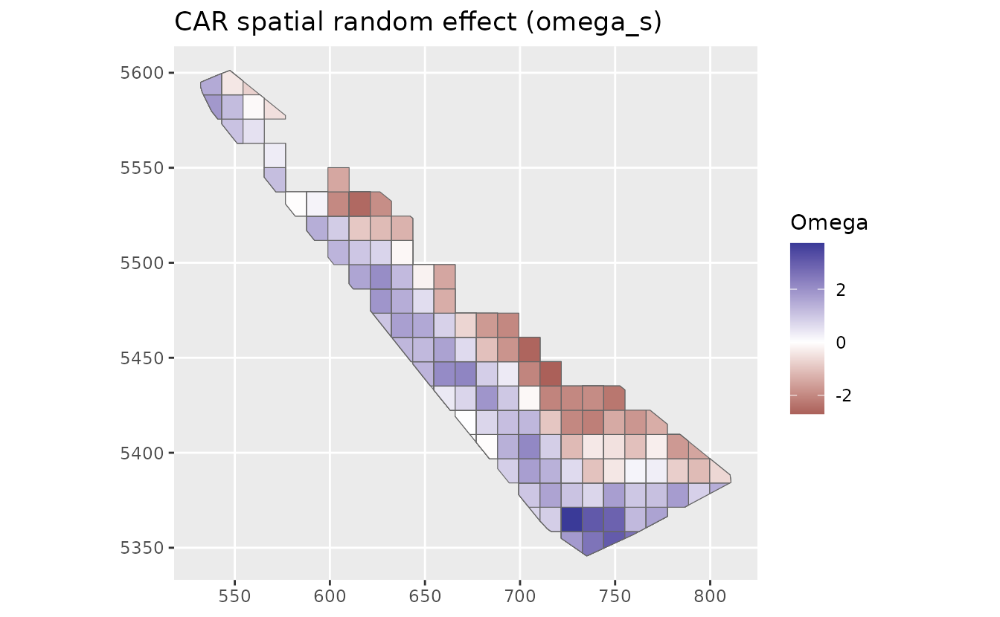
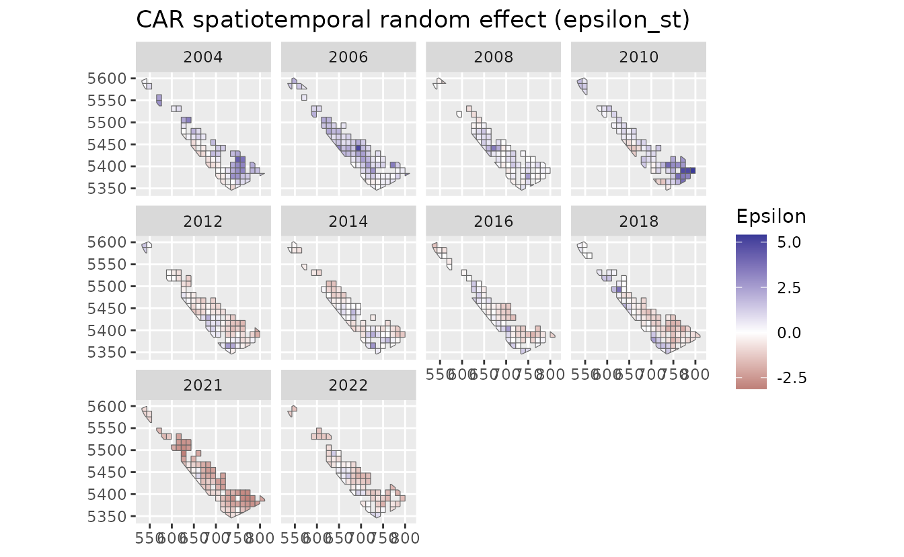
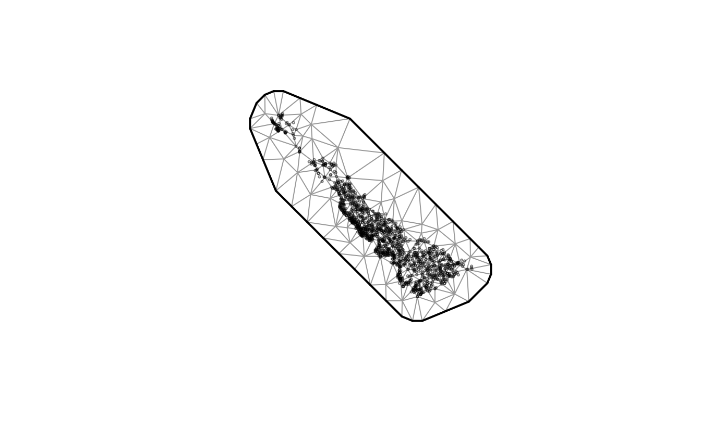
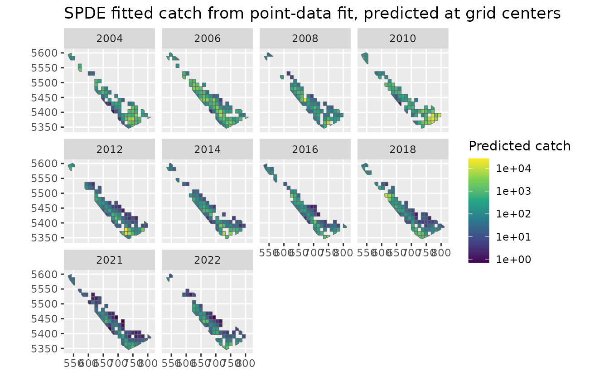
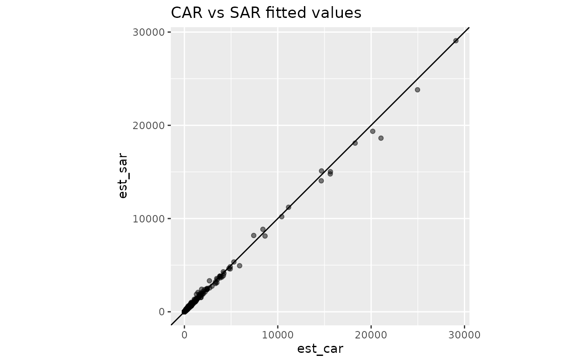
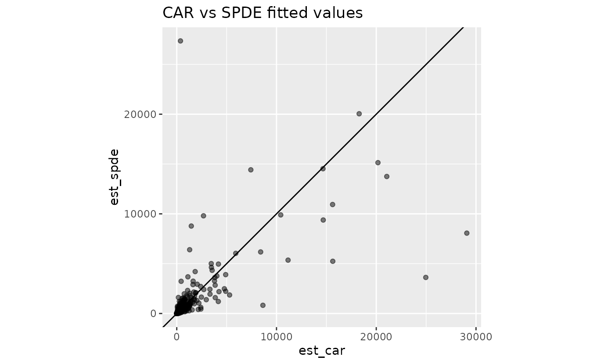

Grid areal models in sdmTMB: CAR, SAR, and SPDE comparison
2026-06-18
Source:vignettes/articles/areal-grid-sar-car-spde.Rmd
areal-grid-sar-car-spde.RmdIf the code in this vignette has not been evaluated, a rendered version is available on the documentation site under ‘Articles’.
This vignette illustrates converting point-based observations into an areal grid that can be fit with CAR or SAR models. It compares:
- CAR model on the areal grid
- SAR model on the areal grid
- SPDE model on point data, summarized back to the same grid for comparison
Build an areal grid and assign observations
The original dogfish data are survey tow-level points.
To fit a CAR or SAR model, we first define polygon areal units (grid
cells) and assign each tow to a cell. We keep the tow-level observations
for model fitting so that the model sees the original catch, effort, and
tow-specific covariates.
# draw a boundary around our points
dogfish_boundary <- st_as_sf(dogfish, coords = c("X", "Y"), crs = NA) |>
st_union() |>
st_convex_hull()
# pass our data and our spatial boundary to make an areal grid:
dogfish_grid_obj <- make_areal_grid(
dogfish,
xy_cols = c("X", "Y"),
spatial_domain = dogfish_boundary,
n = c(25L, 20L), # make a grid with 25 cells by 20 cells
space_column = "cell_id" # optionally rename the output column
)
ggplot(dogfish_grid_obj$grid) + geom_sf() +
geom_point(data = dogfish_grid_obj$data, aes(X, Y), alpha = 0.2)
For very large datasets, one could aggregate observations to one row
per cell_id and year, for example by summing
catch and effort and averaging or summing covariates. That can reduce
computation substantial, but it changes the observation support and
loses within-cell tow-level variation in covariates, catches, zeros, and
effort. Instead, here we will fit the raw observation data:
areal_data <- dogfish_grid_obj$data |>
mutate(log_depth = log(depth))
cell_centres <- dogfish_grid_obj$grid |>
st_drop_geometry() |>
select(cell_id, X_cell = X, Y_cell = Y)
areal_data_xy <- left_join(areal_data, cell_centres, by = "cell_id")Fit CAR and SAR areal models
We fit the same linear predictor and distribution in both models so
the only intended difference is the spatial structure. We’ll wrap our
model fits in system.time() just so we can see if these
CAR/SAR models are faster than the SPDE (they are).
system.time(
fit_car <- sdmTMB(
catch_weight ~ log_depth,
data = areal_data,
mesh = dogfish_grid_obj$domain,
spatial_model = "car",
time = "year",
family = tweedie(link = "log"),
spatial = "on",
spatiotemporal = "iid",
offset = log(areal_data$area_swept)
)
)
#> user system elapsed
#> 4.164 6.436 3.050
system.time(
fit_sar <- sdmTMB(
catch_weight ~ log_depth,
data = areal_data,
mesh = dogfish_grid_obj$domain,
spatial_model = "sar",
time = "year",
family = tweedie(link = "log"),
spatial = "on",
spatiotemporal = "iid",
offset = log(areal_data$area_swept)
)
)
#> user system elapsed
#> 4.222 6.240 3.121
fit_car
#> Spatiotemporal model fit by ML ['sdmTMB']
#> Formula: catch_weight ~ log_depth
#> Mesh: dogfish_grid_obj$domain (isotropic covariance)
#> Time column: character
#> Data: areal_data
#> Family: tweedie(link = 'log')
#>
#> Conditional model:
#> coef.est coef.se
#> (Intercept) 12.01 1.33
#> log_depth -1.60 0.23
#>
#> Dispersion parameter: 6.35
#> Tweedie p: 1.61
#> CAR spatial dependence: 0.99
#> Spatial CAR field scale: 1.90
#> Spatiotemporal IID CAR field scale: 1.92
#> ML criterion at convergence: 5871.792
#>
#> See ?tidy.sdmTMB to extract these values as a data frame.
fit_sar
#> Spatiotemporal model fit by ML ['sdmTMB']
#> Formula: catch_weight ~ log_depth
#> Mesh: dogfish_grid_obj$domain (isotropic covariance)
#> Time column: character
#> Data: areal_data
#> Family: tweedie(link = 'log')
#>
#> Conditional model:
#> coef.est coef.se
#> (Intercept) 12.51 1.22
#> log_depth -1.74 0.22
#>
#> Dispersion parameter: 6.34
#> Tweedie p: 1.61
#> SAR spatial dependence: 0.88
#> Spatial SAR field scale: 0.85
#> Spatiotemporal IID SAR field scale: 0.86
#> ML criterion at convergence: 5865.272
#>
#> See ?tidy.sdmTMB to extract these values as a data frame.
AIC(fit_car, fit_sar)
#> df AIC
#> fit_car 7 11757.58
#> fit_sar 7 11744.54At this stage, check that both models converge and that fixed-effect magnitudes are broadly comparable. Large differences can indicate sensitivity to the areal dependence specification.
Predict CAR/SAR on observed tows
Here we predict on cells that have observed tow rows
(areal_data) rather than expanding to all cell-year
combinations, which we might choose to do in other contexts.
Alternatively, we could have created a data frame of one cell per year
first and predicted to that.
pred_car <- predict(
fit_car,
newdata = areal_data,
type = "response",
offset = rep(0, nrow(areal_data))
)
pred_sar <- predict(
fit_sar,
newdata = areal_data,
type = "response",
offset = rep(0, nrow(areal_data))
)
pred_areal <- areal_data |>
mutate(
est_car = pred_car$est,
est_sar = pred_sar$est,
omega_s_car = pred_car$omega_s,
omega_s_sar = pred_sar$omega_s,
epsilon_st_car = pred_car$epsilon_st,
epsilon_st_sar = pred_sar$epsilon_st
)
# condense to one prediction per cell for plotting
pred_cell_year <- pred_areal |>
group_by(cell_id, year) |>
summarise(
est_car = mean(est_car),
est_sar = mean(est_sar),
omega_s_car = first(omega_s_car),
omega_s_sar = first(omega_s_sar),
epsilon_st_car = first(epsilon_st_car),
epsilon_st_sar = first(epsilon_st_sar),
.groups = "drop"
)
pred_grid <- left_join(
dogfish_grid_obj$grid,
pred_cell_year,
by = "cell_id"
) |>
filter(!is.na(year))
ggplot(pred_grid) +
geom_sf(aes(fill = est_car), colour = "grey40") +
facet_wrap(~year) +
scale_fill_viridis_c(trans = "log10") +
labs(fill = "Predicted catch", title = "Mean CAR fitted catch (per unit effort)")
ggplot(pred_grid) +
geom_sf(aes(fill = est_sar), colour = "grey40") +
facet_wrap(~year) +
scale_fill_viridis_c(trans = "log10") +
labs(fill = "Predicted catch", title = "Mean SAR fitted catch (per unit effort)")
ggplot(pred_grid) +
geom_sf(aes(fill = omega_s_car), colour = "grey40") +
scale_fill_gradient2() +
labs(fill = "Omega", title = "CAR spatial random effect (omega_s)")
ggplot(pred_grid) +
geom_sf(aes(fill = epsilon_st_car), colour = "grey40") +
facet_wrap(~year) +
scale_fill_gradient2() +
labs(fill = "Epsilon", title = "CAR spatiotemporal random effect (epsilon_st)")
Fit an SPDE model on the original point data
Next we fit a continuous-space geostatistical SPDE model to the original tow locations.
spde_mesh <- make_mesh(dogfish, c("X", "Y"), cutoff = 8.5)
spde_mesh$mesh$n
#> [1] 171
dogfish_grid_obj$domain$n_s
#> [1] 172
plot(spde_mesh)
system.time(
fit_spde <- sdmTMB(
catch_weight ~ log(depth),
data = dogfish,
mesh = spde_mesh,
spatial_model = "spde",
time = "year",
family = tweedie(link = "log"),
spatial = "on",
spatiotemporal = "iid",
offset = log(dogfish$area_swept)
)
)
#> user system elapsed
#> 7.580 11.143 5.662
fit_spde
#> Spatiotemporal model fit by ML ['sdmTMB']
#> Formula: catch_weight ~ log(depth)
#> Mesh: spde_mesh (isotropic covariance)
#> Time column: character
#> Data: dogfish
#> Family: tweedie(link = 'log')
#>
#> Conditional model:
#> coef.est coef.se
#> (Intercept) 15.23 1.54
#> log(depth) -2.37 0.29
#>
#> Dispersion parameter: 5.84
#> Tweedie p: 1.59
#> Matérn range: 39.45
#> Spatial SD: 2.29
#> Spatiotemporal IID SD: 1.96
#> ML criterion at convergence: 5778.437
#>
#> See ?tidy.sdmTMB to extract these values as a data frame.
AIC(fit_spde, fit_sar)
#> df AIC
#> fit_spde 7 11570.87
#> fit_sar 7 11744.54That took approximately twice as long as the CAR/SAR models.
Project SPDE predictions onto observed grid-cell locations
To align our predictions, we predict the SPDE model at grid-cell
center locations for the same observed tow rows used by the CAR/SAR
fits. We then summarize fitted values to
cell_id-year rows for maps and
model-comparison plots.
spde_newdata <- areal_data_xy |>
mutate(X = X_cell, Y = Y_cell)
pred_spde_grid <- predict(
fit_spde,
newdata = spde_newdata,
type = "response",
offset = rep(0, nrow(spde_newdata))
)
pred_spde_cell_year <- spde_newdata |>
mutate(
est_spde = pred_spde_grid$est
) |>
group_by(cell_id, year) |>
summarise(
est_spde = mean(est_spde),
.groups = "drop"
)
pred_grid_compare <- left_join(
pred_grid,
pred_spde_cell_year,
by = c("cell_id", "year")
)
ggplot(pred_grid_compare) +
geom_sf(aes(fill = est_spde), colour = "grey40") +
facet_wrap(~year) +
scale_fill_viridis_c(trans = "log10", na.value = "grey90") +
labs(fill = "Predicted catch", title = "SPDE fitted catch from point-data fit, predicted at grid centers")
Compare fitted values
These scatter plots are a quick check of how well the predictions agree:
ggplot(st_drop_geometry(pred_grid_compare), aes(est_car, est_sar)) +
geom_point(alpha = 0.5) +
geom_abline(intercept = 0, slope = 1) +
coord_fixed() +
labs(title = "CAR vs SAR fitted values")
ggplot(st_drop_geometry(pred_grid_compare), aes(est_car, est_spde)) +
geom_point(alpha = 0.5) +
geom_abline(intercept = 0, slope = 1) +
coord_fixed() +
labs(title = "CAR vs SPDE fitted values")
For continuous data, a geostatistical SPDE model is a more natural approach and it better fits the data here. However, sometimes with very large datasets, there may be a computational advantage to using the CAR/SAR models and an even bigger computational advantage to aggregating to a grid and using a CAR or SAR model. That aggregation trades speed for loss of tow-level information. Even without aggregation, the CAR model followed by the SAR model were faster than the SPDE model (approximately twice as fast in this case).